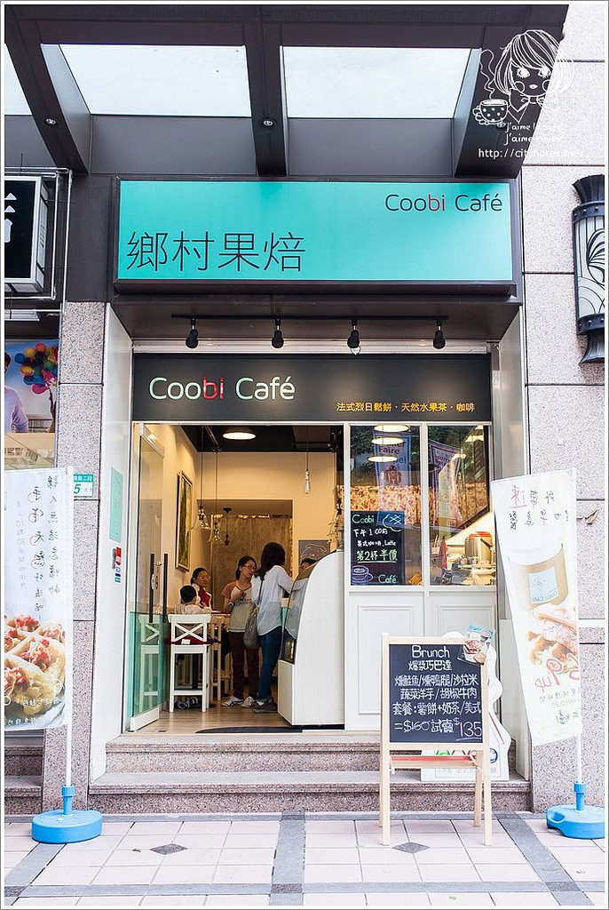
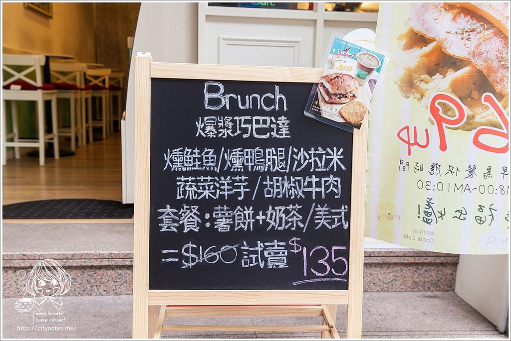
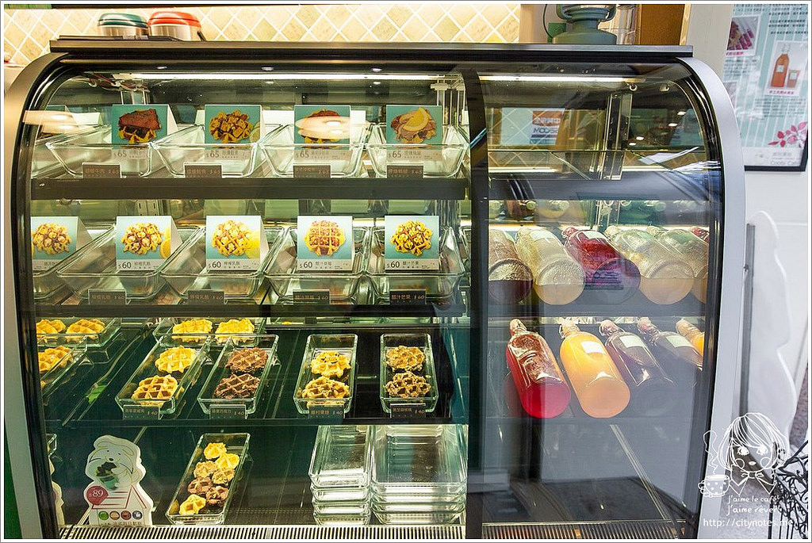
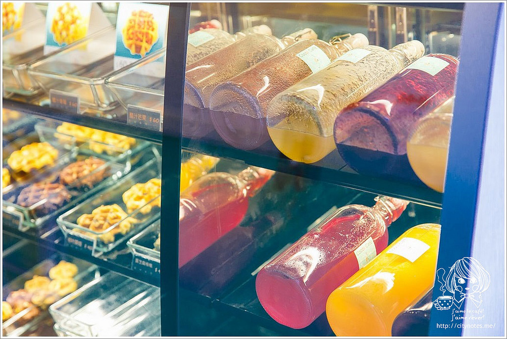
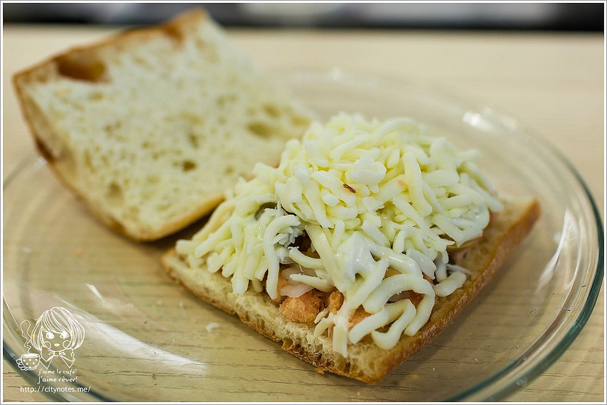
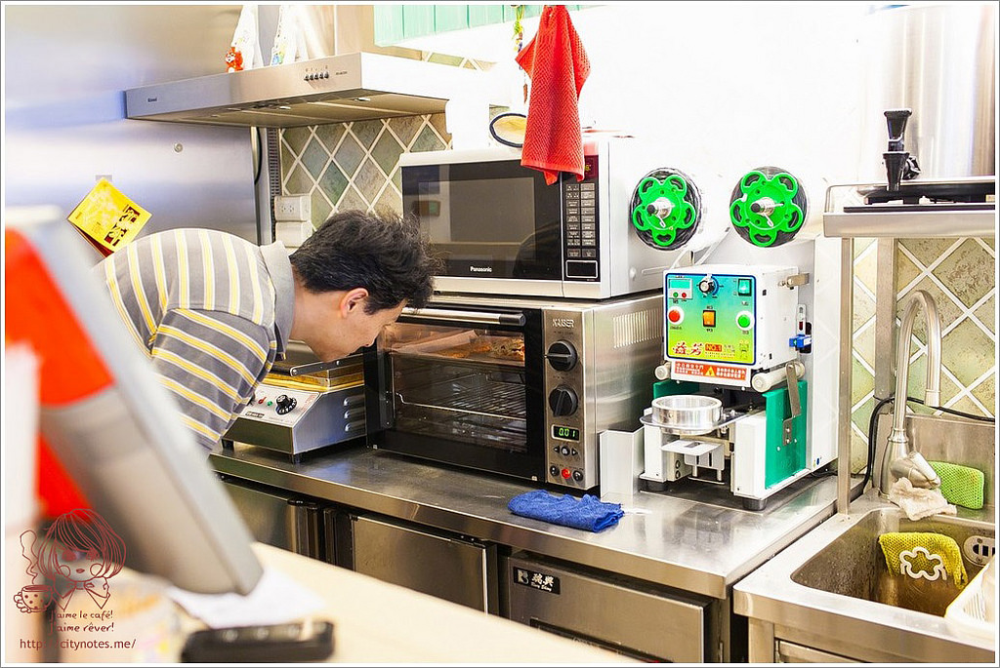
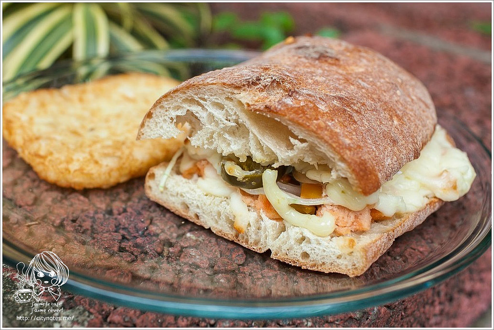
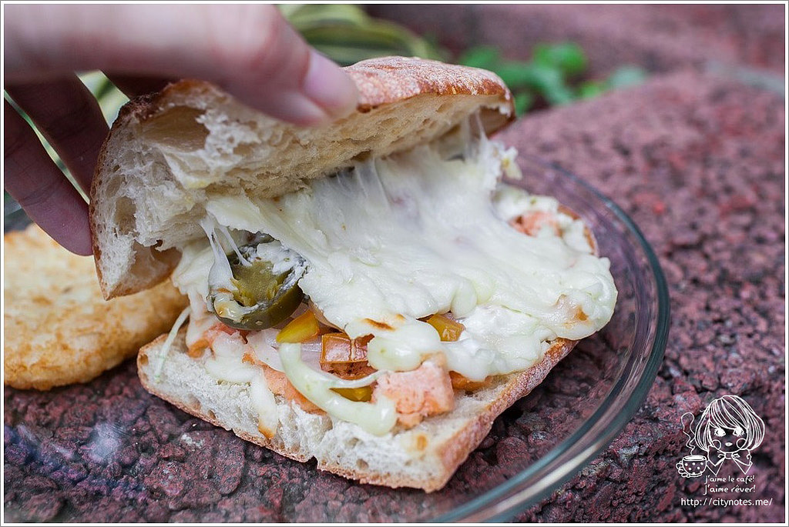
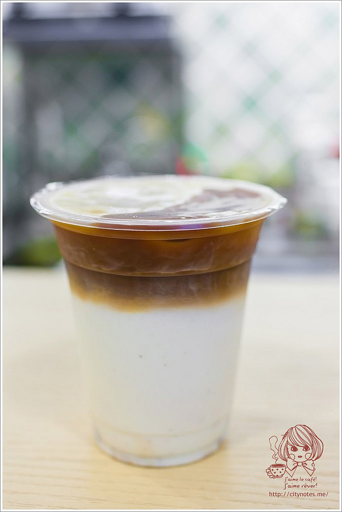
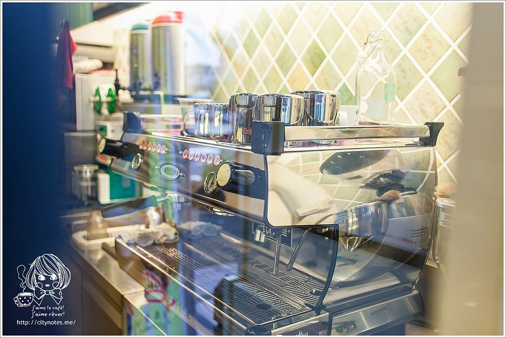

連續兩天，空著肚子往Coobi Café 鄉村果焙跑，
因為整晚躺在床上，都念念不忘他們家的早午餐，
爆漿巧巴達堡讓我戰勝瞌睡蟲，
重啟活力的一天！ヾ(*´∀｀*)ﾉ

Coobi Café 鄉村果焙
台北市大安區金山南路二段25-1號

爆漿巧巴達堡有：燻鴨腿、胡椒牛肉、沙拉米、燻鮭魚、蔬菜洋芋5種口味。

一進來，就看見他們的冷藏櫃，乍看之下，好多比利時鬆餅都空缺！
詢問之下才知道：原來上面兩排巴黎系列與普羅旺斯系列都是現做的，
老闆還很古椎地把這兩系列比利時鬆餅相片放在玻璃櫥櫃裡，
讓點餐的時候可以順利一些！

這些五顏六色的玻璃瓶，裡面是Coobi Café 鄉村果焙自製的水果糖漿唷！
看起來就覺得好健康呀！(笑)
Coobi Café 鄉村果焙店不大，總共9個位置，走先搶先贏的路線。
今天主要是來吃Coobi Café 鄉村果焙的 Brunch！
1號餐:爆漿巧巴達1份 + 黃金薯餅1份 + (鮮奶茶或美式咖啡)1杯 = NT$160 ▶▶▶▶試賣價 NT$135
2號餐:爆漿巧巴達1份 + 黃金薯餅1份 + 那堤咖啡1杯 = NT$180 ▶▶▶▶試賣價 NT$155

進烤箱前先跟老闆借拍一下，發現起司真的是很多很多耶！
起司跌這麼高，讓我好期待它烤出來的樣子呀！

現點現做的，一個約要等個5-10分鐘，依現場狀況而定。

燻鮭魚爆漿巧巴達堡 單/NT$100
Smoked Salman Ciabatta
燻鮭魚丁/乳酪/番茄丁/洋蔥/洋菇/酸豆/墨西哥辣椒/羅勒青醬
燻鮭魚丁給的真不少，厚厚鋪在下層，
搭配番茄丁、洋蔥、洋菇、酸豆、墨西哥辣椒、羅勒青醬，
疊起來分量很夠，起司香味逼死人哪！
墨西哥辣椒會辣，但因為數量不多，整體不算辣，
而且很提味，多了一種刺激，吃起來滋味也頗為豐富！

所謂"爆漿"就是使用了超多的起司！
一掀起來，熱呼呼地，起司嵌在巧巴達麵包的氣孔上，
真是銷魂的香氣呀！

那堤咖啡
與爆漿巧巴達堡搭配成套餐。
鄉村果焙的拿鐵很不錯，口感順，咖啡豆用得很良心！(笑)
最喜歡看它牛奶與咖啡分離的樣子，
可以喝牛奶、喝咖啡、喝咖啡牛奶，
一次嘗盡三種滋味，有種佔到便宜的感覺！(///▽///)

Coobi Café 鄉村果焙品牌小故事:
Coobi Café的命名由來，是為了紀念老闆的已故愛犬喜樂蒂，Coobi聰明、
活潑、可愛，幾年前卻因為得了癌症而去世，我們再也看不到Coobi活蹦亂跳地吃著生前最愛的鬆餅。
老闆的親人也曾罹患過癌症，在食療與化療的幫助下，
身體才逐漸好轉。老闆才意識到飲食對人體健康是多麼重要！
Coobi Café懷抱著健康飲食的夢想，我們用一顆堅持、熱忱的心，向社會推廣健康飲食、拒絕垃圾食物的觀念，
希望帶給大家一個高品質、無負擔以及價格實惠的美好餐飲經驗。
(摘自Coobi Café 鄉村果焙)
Coobi Café 鄉村果焙是我近期很喜歡的一家早午餐！
推薦燻鴨腿爆漿巧巴達堡，
酥脆的爆漿巧巴達堡，咬開來中間是濃郁、超多的起司！
起司包覆了燻鴨腿，鹹酥的奶香，
搭配墨西哥辣椒微辣的口感、洋蔥的微嗆、
蜂蜜烤肉醬的微甜，豐富的層次彷彿在口中倏然炸開，
這些滋味的總和，
有種說不出來的幸福口感！
| 台北市大安區金山南路二段25-1號 |
|
|
| TEL | 02 2394 9277 | |
| 營業時間 | 星期一 ~ 五: AM7:50 ~ PM7:30 星期六: AM11:00 ~ PM7:30 星期日: 公休 (星期一~五遇假日則同星期六時間) |
|
| coobicafe@gmail.com | ||
| 交通方式 | 捷運: 東門站3號出口往金山南路二段步行50公尺 公車: 0南、3、214、284、606、信義幹線(捷運東門站) |
|
| 提供外帶、外送服務 提供Wifi服務 |
||